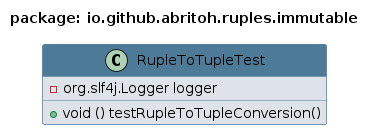

Class RupleToTupleTest
java.lang.Object
io.github.abritoh.ruples.immutable.RupleToTupleTest
Perfoms unit-tests to methods for converting Ruple to Tuple.
Validates the following methods:
- `Ruple.of(...)` - A factory method to create a Ruple.
- `Ruple.fromRecord(Ruple)` - Converts a Ruple to a Tuple.
Class Diagram:

- Since:
- 2024-1118
- Author:
- ClusterBR
Example Usage and Test Case:
This test class demonstrates the conversion of Ruple objects to Tuple objects and validates the correctness of the conversion by checking each element.public class RupleToTupleTest { private static final Logger logger = LoggerFactory.getLogger(RupleToTupleTest.class); @Test public void testRupleToTupleConversion() { Ruple1<String> ruple1 = Ruple1.of("Value1"); Ruple2<String, Integer> ruple2 = Ruple2.of("Value1", 2); Ruple3<String, Integer, Boolean> ruple3 = Ruple3.of("Value1", 2, true); Ruple4<String, Integer, Boolean, Double> ruple4 = Ruple4.of("Value1", 2, true, 4.0); Ruple5<String, Integer, Boolean, Double, Character> ruple5 = Ruple5.of("Value1", 2, true, 4.0, 'A'); Ruple6<String, Integer, Boolean, Double, Character, String> ruple6 = Ruple6.of("Value1", 2, true, 4.0, 'A', "Six"); Ruple7<String, Integer, Boolean, Double, Character, String, Long> ruple7 = Ruple7.of("Value1", 2, true, 4.0, 'A', "Six", 7L); Ruple8<String, Integer, Boolean, Double, Character, String, Long, Float> ruple8 = Ruple8.of("Value1", 2, true, 4.0, 'A', "Six", 7L, 8.0f); Ruple9<String, Integer, Boolean, Double, Character, String, Long, Float, Short> ruple9 = Ruple9.of("Value1", 2, true, 4.0, 'A', "Six", 7L, 8.0f, (short) 9); Ruple10<String, Integer, Boolean, Double, Character, String, Long, Float, Short, Byte> ruple10 = Ruple10.of("Value1", 2, true, 4.0, 'A', "Six", 7L, 8.0f, (short) 9, (byte) 10); Ruple11<String, Integer, Boolean, Double, Character, String, Long, Float, Short, Byte, String> ruple11 = Ruple11.of("Value1", 2, true, 4.0, 'A', "Six", 7L, 8.0f, (short) 9, (byte) 10, "Eleventh"); Ruple12<String, Integer, Boolean, Double, Character, String, Long, Float, Short, Byte, String, Boolean> ruple12 = Ruple12.of("Value1", 2, true, 4.0, 'A', "Six", 7L, 8.0f, (short) 9, (byte) 10, "Eleventh", false); Tuple1<String> tuple1 = Ruple1.fromRecord(ruple1); Tuple2<String, Integer> tuple2 = Ruple2.fromRecord(ruple2); Tuple3<String, Integer, Boolean> tuple3 = Ruple3.fromRecord(ruple3); Tuple4<String, Integer, Boolean, Double> tuple4 = Ruple4.fromRecord(ruple4); Tuple5<String, Integer, Boolean, Double, Character> tuple5 = Ruple5.fromRecord(ruple5); Tuple6<String, Integer, Boolean, Double, Character, String> tuple6 = Ruple6.fromRecord(ruple6); Tuple7<String, Integer, Boolean, Double, Character, String, Long> tuple7 = Ruple7.fromRecord(ruple7); Tuple8<String, Integer, Boolean, Double, Character, String, Long, Float> tuple8 = Ruple8.fromRecord(ruple8); Tuple9<String, Integer, Boolean, Double, Character, String, Long, Float, Short> tuple9 = Ruple9.fromRecord(ruple9); Tuple10<String, Integer, Boolean, Double, Character, String, Long, Float, Short, Byte> tuple10 = Ruple10.fromRecord(ruple10); Tuple11<String, Integer, Boolean, Double, Character, String, Long, Float, Short, Byte, String> tuple11 = Ruple11.fromRecord(ruple11); Tuple12<String, Integer, Boolean, Double, Character, String, Long, Float, Short, Byte, String, Boolean> tuple12 = Ruple12.fromRecord(ruple12); assertEquals(ruple1.first(), tuple1.getV1()); assertEquals(ruple2.first(), tuple2.getV1()); assertEquals(ruple2.second(), tuple2.getV2()); assertEquals(ruple3.first(), tuple3.getV1()); assertEquals(ruple3.second(), tuple3.getV2()); assertEquals(ruple3.third(), tuple3.getV3()); assertEquals(ruple4.first(), tuple4.getV1()); assertEquals(ruple4.second(), tuple4.getV2()); assertEquals(ruple4.third(), tuple4.getV3()); assertEquals(ruple4.fourth(), tuple4.getV4()); assertEquals(ruple5.first(), tuple5.getV1()); assertEquals(ruple5.second(), tuple5.getV2()); assertEquals(ruple5.third(), tuple5.getV3()); assertEquals(ruple5.fourth(), tuple5.getV4()); assertEquals(ruple5.fifth(), tuple5.getV5()); assertEquals(ruple6.first(), tuple6.getV1()); assertEquals(ruple6.second(), tuple6.getV2()); assertEquals(ruple6.third(), tuple6.getV3()); assertEquals(ruple6.fourth(), tuple6.getV4()); assertEquals(ruple6.fifth(), tuple6.getV5()); assertEquals(ruple6.sixth(), tuple6.getV6()); assertEquals(ruple7.first(), tuple7.getV1()); assertEquals(ruple7.second(), tuple7.getV2()); assertEquals(ruple7.third(), tuple7.getV3()); assertEquals(ruple7.fourth(), tuple7.getV4()); assertEquals(ruple7.fifth(), tuple7.getV5()); assertEquals(ruple7.sixth(), tuple7.getV6()); assertEquals(ruple7.seventh(), tuple7.getV7()); assertEquals(ruple8.first(), tuple8.getV1()); assertEquals(ruple8.second(), tuple8.getV2()); assertEquals(ruple8.third(), tuple8.getV3()); assertEquals(ruple8.fourth(), tuple8.getV4()); assertEquals(ruple8.fifth(), tuple8.getV5()); assertEquals(ruple8.sixth(), tuple8.getV6()); assertEquals(ruple8.seventh(), tuple8.getV7()); assertEquals(ruple8.eighth(), tuple8.getV8()); assertEquals(ruple9.first(), tuple9.getV1()); assertEquals(ruple9.second(), tuple9.getV2()); assertEquals(ruple9.third(), tuple9.getV3()); assertEquals(ruple9.fourth(), tuple9.getV4()); assertEquals(ruple9.fifth(), tuple9.getV5()); assertEquals(ruple9.sixth(), tuple9.getV6()); assertEquals(ruple9.seventh(), tuple9.getV7()); assertEquals(ruple9.eighth(), tuple9.getV8()); assertEquals(ruple9.ninth(), tuple9.getV9()); assertEquals(ruple10.first(), tuple10.getV1()); assertEquals(ruple10.second(), tuple10.getV2()); assertEquals(ruple10.third(), tuple10.getV3()); assertEquals(ruple10.fourth(), tuple10.getV4()); assertEquals(ruple10.fifth(), tuple10.getV5()); assertEquals(ruple10.sixth(), tuple10.getV6()); assertEquals(ruple10.seventh(), tuple10.getV7()); assertEquals(ruple10.eighth(), tuple10.getV8()); assertEquals(ruple10.ninth(), tuple10.getV9()); assertEquals(ruple10.tenth(), tuple10.getV10()); assertEquals(ruple11.first(), tuple11.getV1()); assertEquals(ruple11.second(), tuple11.getV2()); assertEquals(ruple11.third(), tuple11.getV3()); assertEquals(ruple11.fourth(), tuple11.getV4()); assertEquals(ruple11.fifth(), tuple11.getV5()); assertEquals(ruple11.sixth(), tuple11.getV6()); assertEquals(ruple11.seventh(), tuple11.getV7()); assertEquals(ruple11.eighth(), tuple11.getV8()); assertEquals(ruple11.ninth(), tuple11.getV9()); assertEquals(ruple11.tenth(), tuple11.getV10()); assertEquals(ruple11.eleventh(), tuple11.getV11()); assertEquals(ruple12.first(), tuple12.getV1()); assertEquals(ruple12.second(), tuple12.getV2()); assertEquals(ruple12.third(), tuple12.getV3()); assertEquals(ruple12.fourth(), tuple12.getV4()); assertEquals(ruple12.fifth(), tuple12.getV5()); assertEquals(ruple12.sixth(), tuple12.getV6()); assertEquals(ruple12.seventh(), tuple12.getV7()); assertEquals(ruple12.eighth(), tuple12.getV8()); assertEquals(ruple12.ninth(), tuple12.getV9()); assertEquals(ruple12.tenth(), tuple12.getV10()); assertEquals(ruple12.eleventh(), tuple12.getV11()); assertEquals(ruple12.twelfth(), tuple12.getV12()); logger.info("(RupleToTupleTest::testRupleToTupleConversion) test completed successfully!"); } }
-
Constructor Summary
Constructors -
Method Summary
-
Constructor Details
-
RupleToTupleTest
public RupleToTupleTest()
-
-
Method Details
-
testRupleToTupleConversion
@Test public void testRupleToTupleConversion()
-